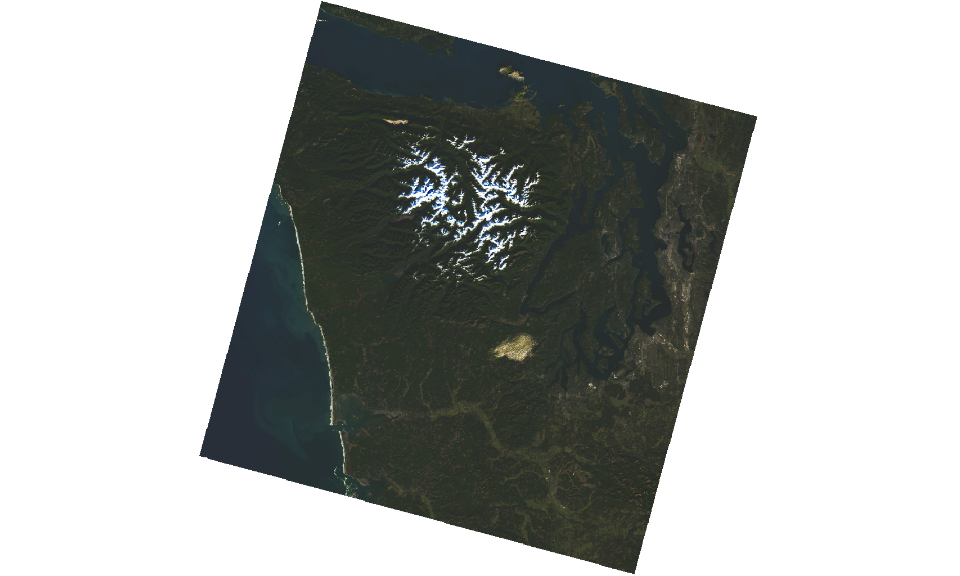
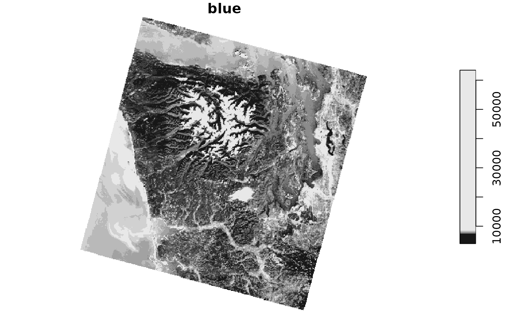
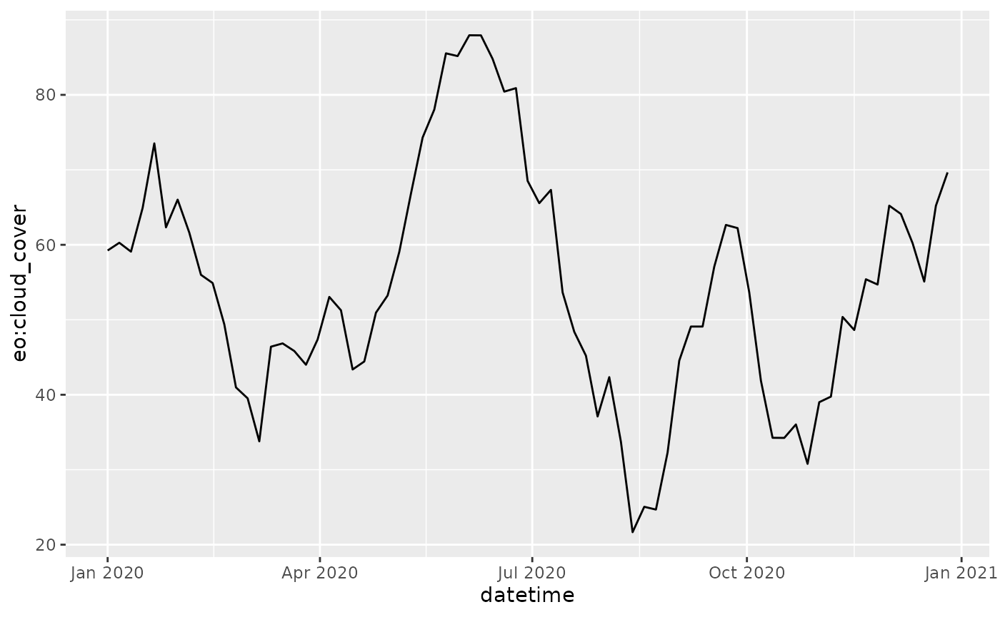

Reading Planetary Computer Data using CQL2 filter extension
2022-12-21
Source:vignettes/rstac-03-cql2-mpc.Rmd
rstac-03-cql2-mpc.Rmd
library(rstac)
library(tmap)
library(leaflet)
library(stars)
library(slider)
library(ggplot2)
library(purrr)
library(dplyr)
library(httr)Introduction
This tutorial will use the open-source package rstac to
search data in Planetary Computer’s SpatioTemporal Asset Catalog (STAC)
service. STAC services can be accessed through STAC API endpoints, which
allow users to search datasets using various parameters such as space
and time. In addition to demonstrating the use of rstac,
the tutorial will explain the Common Query Language (CQL2) filter
extension to narrow the search results and find datasets that meet
specific criteria in the STAC API.
This tutorial is based on reading STAC API data in Python.
Reading data from STAC API
To access Planetary Computer STAC API, we’ll create a
rstac query.
planetary_computer <- stac("https://planetarycomputer.microsoft.com/api/stac/v1")
planetary_computer
#> ###rstac_query
#> - url: https://planetarycomputer.microsoft.com/api/stac/v1/
#> - params:
#> - field(s): version, base_url, endpoint, params, verb, encodeListing supported properties in CQL2
CQL2 expressions can be constructed using properties that refer to
attributes of items. A list of all properties supported by a collection
can be obtained by accessing the
/collections/<collection_id>/queryables endpoint.
Filter expressions can use properties listed in this endpoint.
In this example, we will search for Landsat
Collection 2 Level-2 imagery of the Microsoft main campus from
December 2020. The name of this collection in STAC service is
landsat-c2-l2. Here we’ll prepare a query to retrieve its
queryables and make a GET request to the service.
planetary_computer %>%
collections("landsat-c2-l2") %>%
queryables() %>%
get_request()
#> ###Queryables
#> - properties (27 entries(s)):
#> - id
#> - gsd
#> - created
#> - sci:doi
#> - datetime
#> - geometry
#> - platform
#> - proj:epsg
#> - instrument
#> - proj:shape
#> - ... with 17 more entry(ies).
#> - field(s): $id, type, title, $schema, propertiesSearching with CQL2
Now we can use rstac to make a search query with CQL2
filter extension to obtain the items.
time_range <- cql2_interval("2020-12-01", "2020-12-31")
bbox <- c(-122.2751, 47.5469, -121.9613, 47.7458)
area_of_interest = cql2_bbox_as_geojson(bbox)
stac_items <- planetary_computer %>%
ext_filter(
collection == "landsat-c2-l2" &&
t_intersects(datetime, {{time_range}}) &&
s_intersects(geometry, {{area_of_interest}})
) %>%
post_request()In that example, our filter expression used a temporal
(t_intersects) and a spatial (s_intersects)
operators. t_intersects() only accepts interval as it
second argument, which we created using function
cql2_interval(). s_intersects() spatial
operator only accepts GeoJSON objects as its arguments. This is why we
had to convert the bounding box vector (bbox) into a
structure representing a GeoJSON object using the function
cql2_bbox_as_geojson(). We embrace the arguments using
{{ to evaluate them before make the request.
items is an Items object containing 8 items
that matched our search criteria.
stac_items
#> ###Items
#> - features (8 item(s)):
#> - LC08_L2SP_046027_20201229_02_T2
#> - LE07_L2SP_047027_20201228_02_T1
#> - LE07_L2SP_046027_20201221_02_T2
#> - LC08_L2SP_047027_20201220_02_T2
#> - LC08_L2SP_046027_20201213_02_T2
#> - LE07_L2SP_047027_20201212_02_T1
#> - LE07_L2SP_046027_20201205_02_T1
#> - LC08_L2SP_047027_20201204_02_T1
#> - assets:
#> ang, atmos_opacity, atran, blue, cdist, cloud_qa, coastal, drad, emis, emsd, green, lwir, lwir11, mtl.json, mtl.txt, mtl.xml, nir08, qa, qa_aerosol, qa_pixel, qa_radsat, red, rendered_preview, swir16, swir22, tilejson, trad, urad
#> - item's fields:
#> assets, bbox, collection, geometry, id, links, properties, stac_extensions, stac_version, typeExploring data
An Items is a regular GeoJSON object. It is a collection
of Item entries that stores metadata on assets. Users can
convert a Items to a sf object containing the
properties field as columns. Here we depict the items footprint.
sf <- items_as_sf(stac_items)
# create a function to plot a map
plot_map <- function(x) {
tmap_mode("view")
tm_basemap(providers[["Stamen.Watercolor"]]) +
tm_shape(x) +
tm_borders()
}
plot_map(sf)
#> tmap mode set to interactive viewingSome collections use the eo extension, which allows us
to sort items by attributes like cloud coverage. The next example
selects the item with lowest cloud_cover attribute:
cloud_cover <- stac_items %>%
items_reap(field = c("properties", "eo:cloud_cover"))
selected_item <- stac_items$features[[which.min(cloud_cover)]]We use function items_reap() to extract cloud cover
values from all features.
Each STAC item have an assets field which describes
files and provides link to access them.
items_assets(selected_item)
#> [1] "qa" "ang" "red" "blue"
#> [5] "drad" "emis" "emsd" "trad"
#> [9] "urad" "atran" "cdist" "green"
#> [13] "nir08" "lwir11" "swir16" "swir22"
#> [17] "coastal" "mtl.txt" "mtl.xml" "mtl.json"
#> [21] "qa_pixel" "qa_radsat" "qa_aerosol" "tilejson"
#> [25] "rendered_preview"
map_dfr(items_assets(selected_item), function(key) {
tibble(asset = key, description = selected_item$assets[[key]]$title)
})
#> # A tibble: 25 × 2
#> asset description
#> <chr> <chr>
#> 1 qa Surface Temperature Quality Assessment Band
#> 2 ang Angle Coefficients File
#> 3 red Red Band
#> 4 blue Blue Band
#> 5 drad Downwelled Radiance Band
#> 6 emis Emissivity Band
#> 7 emsd Emissivity Standard Deviation Band
#> 8 trad Thermal Radiance Band
#> 9 urad Upwelled Radiance Band
#> 10 atran Atmospheric Transmittance Band
#> # ℹ 15 more rowsHere, we’ll inspect the rendered_preview asset. To plot
this asset, we can use the helper function preview_plot()
and provide a URL to be plotted. We use the function
assets_url() to get the URL. This function extracts all
available URLs in items.
selected_item$assets[["rendered_preview"]]$href
#> [1] "https://planetarycomputer.microsoft.com/api/data/v1/item/preview.png?collection=landsat-c2-l2&item=LC08_L2SP_047027_20201204_02_T1&assets=red&assets=green&assets=blue&color_formula=gamma+RGB+2.7%2C+saturation+1.5%2C+sigmoidal+RGB+15+0.55&format=png"
selected_item %>%
assets_url(asset_names = "rendered_preview") %>%
preview_plot()
The rendered_preview asset is generated dynamically by
Planetary Computer API using raw data. We can access the raw data,
stored as Cloud Optimized GeoTIFFs (COG) in Azure Blob Storage, using
the other assets. These assets are in private Azure Blob Storage
containers and is necessary to sign them to have access to the data,
otherwise, you’ll get a 404 (forbidden) status code.
Signing items
To sign URL in rstac, we can use
items_sign() function.
selected_item <- selected_item %>%
items_sign(sign_fn = sign_planetary_computer())
selected_item %>%
assets_url(asset_names = "blue") %>%
substr(1, 255)
#> [1] "https://landsateuwest.blob.core.windows.net/landsat-c2/level-2/standard/oli-tirs/2020/047/027/LC08_L2SP_047027_20201204_20210313_02_T1/LC08_L2SP_047027_20201204_20210313_02_T1_SR_B2.TIF?st=2024-07-17T19%3A33%3A24Z&se=2024-07-18T20%3A18%3A24Z&sp=rl&sv=2024"Everything after the ? in that URL is a SAS
token grants access to the data. See https://planetarycomputer.microsoft.com/docs/concepts/sas/
for more on using tokens to access data.
selected_item %>%
assets_url(asset_names = "blue") %>%
HEAD() %>%
status_code()
#> [1] 200The 200 status code means that we were able to access the data using the signed URL with the SAS token included.
Reading files
We can load up that single COG file using packages like stars or terra.
selected_item %>%
assets_url(asset_names = "blue", append_gdalvsi = TRUE) %>%
read_stars(RasterIO = list(nBufXSize = 512, nBufYSize = 512)) %>%
plot(main = "blue")
We used the assets_url() method with the
append_gdalvsi = TRUE parameter to insert
/vsicurl in the URL. This allows the GDAL VSI driver to
access the data using HTTP.
Searching on additional properties
In the previous step of this tutorial, we learned how to search for items by specifying the space and time parameters. However, the Planetary Computer’s STAC API offers even more flexibility by allowing you to search for items based on additional properties.
For instance, collections like sentinel-2-l2a and
landsat-c2-l2 both implement the eo STAC extension and
include an eo:cloud_cover property. To filter your search
results to only return items that have a cloud coverage of less than
20%, you can use:
stac_items <- planetary_computer %>%
ext_filter(
collection %in% c("sentinel-2-l2a", "landsat-c2-l2") &&
t_intersects(datetime, {{time_range}}) &&
s_intersects(geometry, {{area_of_interest}}) &&
`eo:cloud_cover` < 20
) %>%
post_request()Here we search for sentinel-2-l2a and
landsat-c2-l2 assets. As a result, we have images from both
collections in our search results. Users can rename the assets to have a
common name in both collections.
stac_items <- stac_items %>%
assets_select(asset_names = c("B11", "swir16")) %>%
assets_rename(B11 = "swir16")
stac_items %>%
items_assets()
#> [1] "swir16"assets_rename() uses parameter mapper that is used to
rename asset names. The parameter can be either a named list or a
function that is called against each asset metadata. A last parameter
was included to force band renaming.
Analyzing STAC Metadata
Item objects are features of Items and
store information about assets.
stac_items <- planetary_computer %>%
ext_filter(
collection == "sentinel-2-l2a" &&
t_intersects(datetime, interval("2020-01-01", "2020-12-31")) &&
s_intersects(geometry, {{
cql2_bbox_as_geojson(c(-124.2751, 45.5469, -123.9613, 45.7458))
}})
) %>%
post_request()
stac_items <- items_fetch(stac_items)We can use the metadata to plot cloud cover of a region over time, for example.
df <- items_as_sf(stac_items) %>%
mutate(datetime = as.Date(datetime)) %>%
group_by(datetime) %>%
summarise(`eo:cloud_cover` = mean(`eo:cloud_cover`)) %>%
mutate(`eo:cloud_cover` = slide_mean(`eo:cloud_cover`, before = 3, after = 3))
df %>%
ggplot() +
geom_line(aes(x = datetime, y = `eo:cloud_cover`))
cql2_bbox_as_geojson() is a rstac helper
function and it must be evaluated before the request. This is why we
embraced it with {{. We use items_fetch() to
retrieve all paginated items matched in the search.
Working with STAC Catalogs and Collections
STAC organizes items in catalogs (STACCatalog) and
collections (STACCollection). These JSON documents contains
metadata of the dataset they refer to. For instance, here we look at the
Bands
available for Landsat
8 Collection 2 Level 2 data:
landsat <- planetary_computer %>%
collections(collection_id = "landsat-c2-l2") %>%
get_request()
map_dfr(landsat$summaries$`eo:bands`, as_tibble)
#> # A tibble: 22 × 5
#> name common_name description center_wavelength full_width_half_max
#> <chr> <chr> <chr> <dbl> <dbl>
#> 1 TM_B1 blue Visible blue (Thema… 0.49 0.07
#> 2 TM_B2 green Visible green (Them… 0.56 0.08
#> 3 TM_B3 red Visible red (Themat… 0.66 0.06
#> 4 TM_B4 nir08 Near infrared (Them… 0.83 0.14
#> 5 TM_B5 swir16 Short-wave infrared… 1.65 0.2
#> 6 TM_B6 lwir Long-wave infrared … 11.4 2.1
#> 7 TM_B7 swir22 Short-wave infrared… 2.22 0.27
#> 8 ETM_B1 blue Visible blue (Enhan… 0.48 0.07
#> 9 ETM_B2 green Visible green (Enha… 0.56 0.08
#> 10 ETM_B3 red Visible red (Enhanc… 0.66 0.06
#> # ℹ 12 more rowsWe can see what Assets are available on our item with:
map_dfr(landsat$item_assets, function(x) {
as_tibble(
compact(x[c("title", "description", "gsd")])
)
})
#> # A tibble: 25 × 3
#> title description gsd
#> <chr> <chr> <int>
#> 1 Surface Temperature Quality Assessment Band Collection 2 Level-2 Quali… NA
#> 2 Angle Coefficients File Collection 2 Level-1 Angle… NA
#> 3 Red Band NA NA
#> 4 Blue Band NA NA
#> 5 Downwelled Radiance Band Collection 2 Level-2 Downw… NA
#> 6 Emissivity Band Collection 2 Level-2 Emiss… NA
#> 7 Emissivity Standard Deviation Band Collection 2 Level-2 Emiss… NA
#> 8 Surface Temperature Band Collection 2 Level-2 Therm… NA
#> 9 Thermal Radiance Band Collection 2 Level-2 Therm… NA
#> 10 Upwelled Radiance Band Collection 2 Level-2 Upwel… NA
#> # ℹ 15 more rowsSome collections, like Daymet
include collection-level assets. You can use the assets
property to access those assets.
daymet <- planetary_computer %>%
collections(collection_id = "daymet-daily-na") %>%
get_request()
daymet
#> ###Collection
#> - id: daymet-daily-na
#> - title: Daymet Daily North America
#> - description:
#> Gridded estimates of daily weather parameters. [Daymet](https://daymet.ornl.gov) Version 4 variables include the following parameters: minimum temperature, maximum temperature, precipitation, shortwave radiation, vapor pressure, snow water equivalent, and day length.
#>
#> [Daymet](https://daymet.ornl.gov/) provides measurements of near-surface meteorological conditions; the main purpose is to provide data estimates where no instrumentation exists. The dataset covers the period from January 1, 1980 to the present. Each year is processed individually at the close of a calendar year. Data are in a Lambert conformal conic projection for North America and are distributed in Zarr and NetCDF formats, compliant with the [Climate and Forecast (CF) metadata conventions (version 1.6)](http://cfconventions.org/).
#>
#> Use the DOI at [https://doi.org/10.3334/ORNLDAAC/1840](https://doi.org/10.3334/ORNLDAAC/1840) to cite your usage of the data.
#>
#> This dataset provides coverage for Hawaii; North America and Puerto Rico are provided in [separate datasets](https://planetarycomputer.microsoft.com/dataset/group/daymet#daily).
#>
#>
#> - field(s):
#> id, type, links, title, assets, extent, license, sci:doi, keywords, providers, description, sci:citation, stac_version, msft:group_id, cube:variables, msft:container, cube:dimensions, msft:group_keys, stac_extensions, msft:storage_account, msft:short_description, msft:regionJust like assets on items, these assets include links to data in Azure Blob Storage.
items_assets(daymet)
#> [1] "thumbnail" "zarr-abfs" "zarr-https"
daymet %>%
assets_select(asset_names = "zarr-abfs") %>%
assets_url()
#> [1] "abfs://daymet-zarr/daily/na.zarr"Learn more
For more about the Planetary Computer’s STAC API, see Using
tokens for data access and the STAC
API reference. For more about CQL2 in rstac, type the
command ?ext_filter.